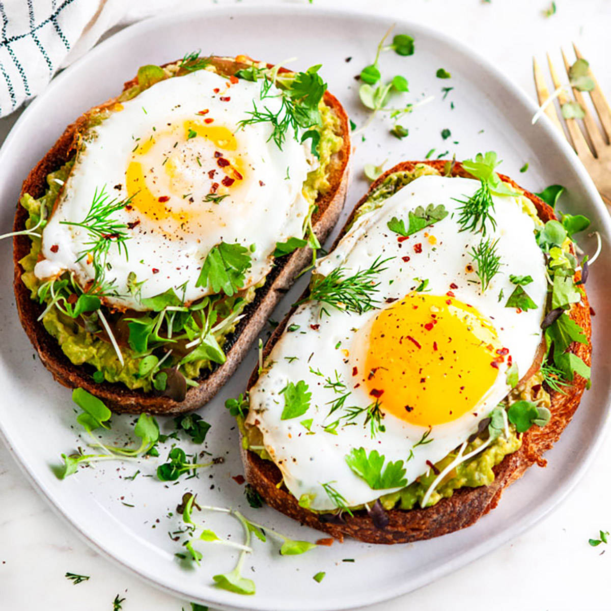

Avocado Toast

This protein Avocado toast recipe can be enjoyed at breakfast
or lunch and can be easily tailored your personal likings. It does
not require many ingredients and can be made in just 10 minutes. It serves
as the perfect snack or meal to get extra protein in.
Most Ingredients are optional because you can add or choose
not to add anything you wish; I'm sure there are some really
tasty ingredients that I have not thought to add so feel free to
explore what you prefer. It's easier to use avocadoes that are already ripe or overly ripe
because mashing underripe avocadoes is a difficult task, but it can be done if you're up for the challenge.
Ingredients
- 2 slices of bread
- 1 Avocado
- 2-3 eggs
- red pepper flakes(optional)
- everything bagel seasoning(optional)
- honey(optional)
- shredded parmesan cheese(optional)
- hot sauce(optional)
- salt and pepper
Steps
- Put the bread in the toaster. I prefer slightly toasted bread but put it on the setting you want.
- Get out a cutting board and slice your avocado in half with a knife. Throw out the pit and scoop the avocado onto the cutting board.
Using a fork, mash the avocado down into a thick pancake.
- Add salt and pepper, red pepper flakes, everything bagel seasoning, honey, and any other seasonings you want. Mix the seasonings
in by folding the avocado into itself multiple times and smashing it more.
- Turn your stovetop on to low-medium heat and spray your skillet with non stick spray. Crack your eggs into the pan, trying not to break the yolks.
- Add salt and pepper. Let them cook until the bottom of the whites start to harden but the yolk is still soft. At this point, use your fork to break the yolks. Let them
Keep cooking until the white top of the whites also start to harden but the yolks are still runny.
- Use a spatula and flip the eggs in half like an omelette. Let them cook until the yolk is not running anymore. Use your spatula to cut them in half
and remove from heat.
- Take the Toast and split your avocado mash evenly into two. Scoop the mash onto the pieces of toast. Then add one half of the egg to each piece of toast.
- Top with the parmesan cheese and hot sauce.
Enjoy!